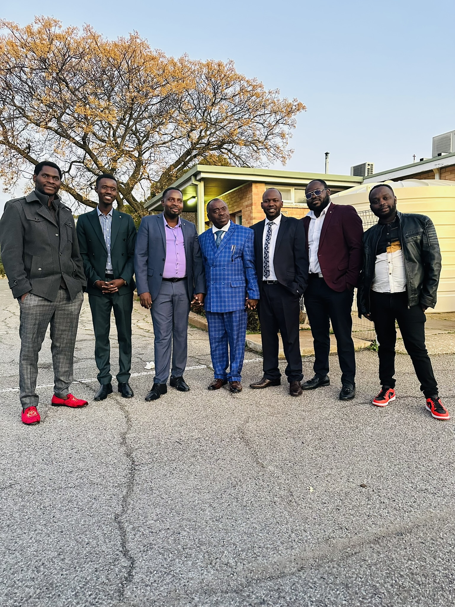

Jesus Christ in us, the hope of glory.

IEPC Church is a Burundian community church located in Elizabeth, South Australia. We are a Christian church that believes in Jesus Christ, the Son of God, our Redeemer and Saviour.
We believe that Jesus Christ died for our sins so that we may be saved. Through Him, we have forgiveness, hope, restoration, and eternal life.
Sunday Service:
11:30 AM – 2:45 PM
Prayer Meeting:
Thursday 5:00 PM – 7:00 PM
Voice of Peace Choir:
Tuesday: 5:00 PM – 8:00 PM
Friday: 5:00 PM – 8:00 PM
521 Main N Rd, Elizabeth SA 5112
View on Google MapsEmail: iepc.church@outlook.com
Send Email Chat on WhatsApp